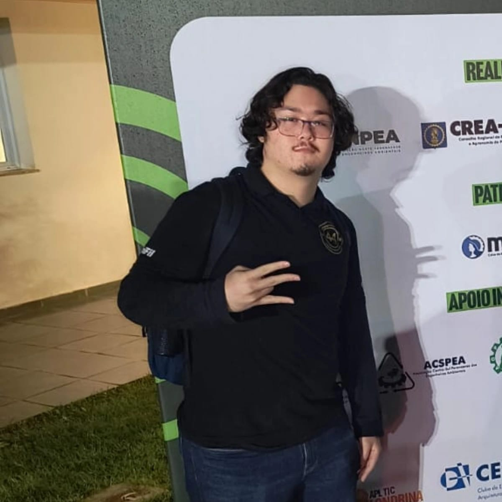

Portfólio - Willian Kenzo Sant'Anna
Olá, meu nome é Willian, bem vindo ao meu portfólio!
Tenho 19 anos
Curso Engenharia de Software na UniFil - Centro Universitário Filadélfia
Atualmente meu objetivo é me tornar um desenvolvedor FullStack

Sobre mim
Meu nome é Willian e sou estudante de Engenharia de Software na UniFil. Atualmente, sou membro do Núcleo de Práticas em Informática (NPI), onde busco desenvolver e aprofundar meus conhecimentos na área de tecnologia. Também atuo como monitor no Londrinense Tech e em atividades de Pensamento Computacional, experiências que contribuem para o desenvolvimento das minhas habilidades técnicas e de comunicação. Meu principal objetivo profissional é me tornar um desenvolvedor Full Stack, embora também tenha grande interesse pela área de dados. Busco constantemente ampliar meus conhecimentos, explorar novas tecnologias e desenvolver habilidades que me permitam atuar em diferentes áreas da tecnologia.
Habilidades
Técnicas
- Lógica de programação
- HTML • Básico
- CSS • Básico
- Java • Básico
| Pessoais | Upskilling |
|---|---|
| Jogos | Inteligência Artificial |
| Música | Área de dados |
| Filmes | Cybersegurança |
| Livros | Machine Learning |